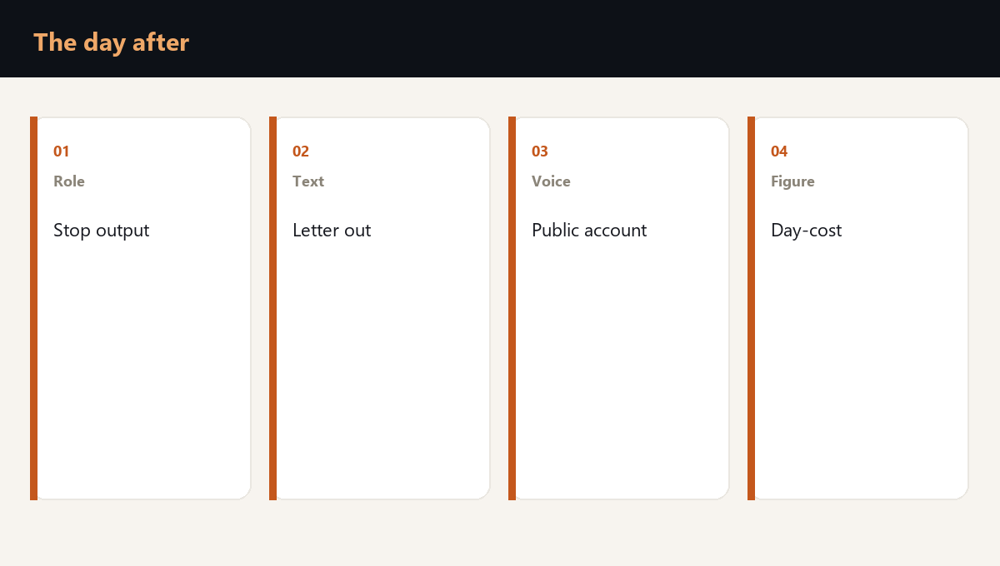

The day after a drone strike is won by the company that wrote the roles, the authority and the texts beforehand. Who stops output, who writes to the supplier and the contractor, who speaks to the press, and which day-cost figure sits behind each decision.

Roles and authority before the event
In the first hour one person decides, and a deputy holds the same right. The right to stop the line, the right to cancel a movement, and the right to speak for the company are written against jobs.
| Decision | Who may | What is recorded |
|---|---|---|
| Stop output | The site director and the deputy | The time of the stop |
| The letter to a supplier | The contract owner | The new date and volume |
| The text for the press | One named voice | What happened and what we are doing |
| The day figure | Finance together with the site | Lost output and the penalty |
- One voice outward. The others do not improvise in a messenger.
- The deputy is named by job and has been tested on a practice call.
- The authority to stop output does not wait for a board to assemble.
- Each decision leaves a time and a name in the log.
What to write to suppliers and contractors
The letter is short and drafted in advance. It holds three facts: the site has stopped a named flow, the previous date moves, and the next confirmation will come at a named hour. A promise the company cannot keep stays out of the letter.
A contractor on the site receives a separate text: where not to drive in, whom to obey, where the muster point is. It is the same order the company's own shift receives.
The press and the customer hear the same sequence of facts. Only the detail the recipient needs for their own plan differs.
Where this is tested
The drone strike readiness check runs these roles on your site: who stops, who writes, what the day of downtime comes to in money, how far output falls, and which text goes to the counterparty.
Frequently asked questions
The deputy named in advance. A second manager improvising in that hour creates a second version of the event.
As soon as the decision to stop is written down. Silence until evening reads to the customer as an absence of control.
The fact of the stop, which flow is affected, and when the next message will come. The company does not announce a cause it does not have.
Is your team ready for the first hour of a crisis?
You test a plan by running a scenario. Reading it is not enough. The assessment shows the gaps, and the corporate format works through them with your team on your own processes.